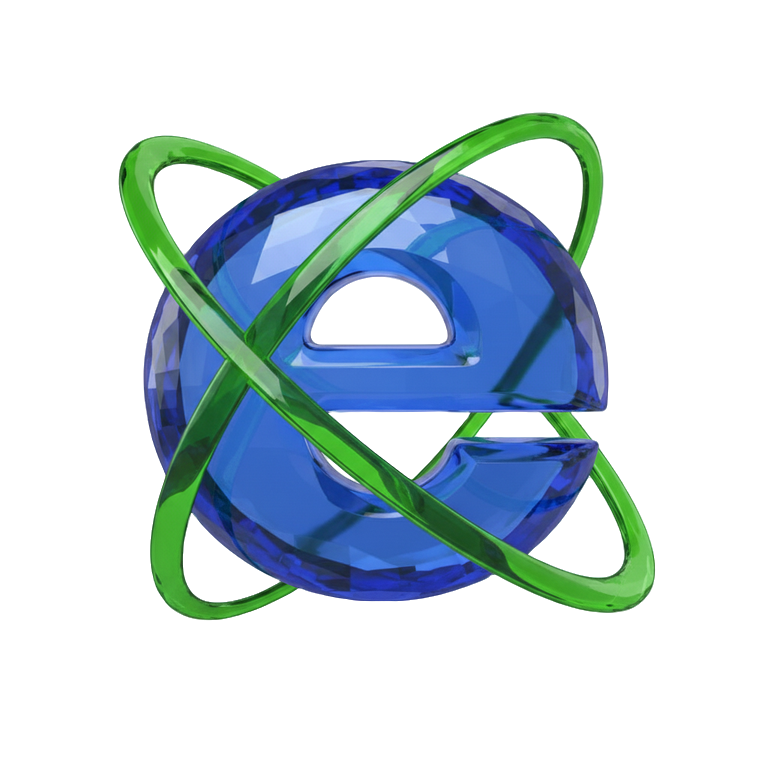

Website's Log
Game and calendar ACNH theme [Jan 26]
Blog module update [Oct 25]
Stamps module update [Oct 25]
Player module update [Sep 25]
Game module update [Sep 25]
Calendar module update [Sep 25]
P.W.A. enabled [Sep 25]
Stamps module creation [Sep 25]
Blog module creation [Sep 25]
Player module creation [Sep 25]
Calendar module creation [Sep 25]
Game module creation [Sep 25]
Home screen update [Sep 25]
Exo creation [2022]